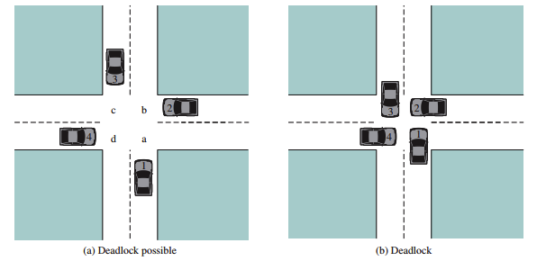

Previous slide Next slide Toggle fullscreen Toggle overview view Open presenter view
Capítulo 6: Deadlock e Inanición Principios, Prevención, Evitación y Recuperación
William Stallings — Operating Systems: Internals and Design Principles (9ª Ed.)
Contenido del Capítulo
Principios de Deadlock Prevención de Deadlock Evitación de Deadlock (Algoritmo del Banquero) Detección de Deadlock Recuperación de Deadlock El Problema de la Cena de los Filósofos Inanición (Starvation)
Objetivos de Aprendizaje
Definir deadlock y distinguirlo de otros problemas de concurrencia
Explicar las 4 condiciones de Coffman necesarias para deadlock
Describir las cuatro estrategias para manejar deadlocks
Implementar el algoritmo del banquero para evitación de deadlocks
Comprender los algoritmos de detección basados en grafos
Analizar el problema de la cena de los filósofos
Diferenciar deadlock , inanición y livelock
1. Principios de Deadlock

Definición de Deadlock Deadlock (bloqueo mutuo): un conjunto de procesos está en deadlock cuando cada proceso en el conjunto espera un evento que solo otro proceso del conjunto puede provocar.
Un deadlock es el abrazo mortal donde ninguno puede avanzar porque todos esperan a los demás.
Ejemplo clásico — Dos procesos y dos recursos (Stallings, Fig 6.1):
P1: Tiene el recurso A, espera el recurso B
P2: Tiene el recurso B, espera el recurso A
Resultado: ambos esperan para siempre .
Condiciones de Coffman (1971) Cuatro condiciones necesarias para que ocurra deadlock:
#
Condición
Descripción
Cómo negarla
1
Exclusión Mutua Los recursos no pueden ser compartidos (modo exclusivo)
Usar recursos compartibles cuando sea posible
2
Retener y Esperar Un proceso retiene recursos mientras espera otros
Solicitar todos los recursos al inicio
3
Sin Desalojo Los recursos no pueden ser quitados forzosamente
Permitir desalojo de recursos
4
Espera Circular Existe un ciclo en el grafo de asignación
Establecer orden jerárquico de recursos
Importante: estas condiciones son necesarias pero no suficientes . Si las 4 se cumplen, puede ocurrir deadlock (no es garantía).
Modelado con Grafos de Asignación de Recursos Elementos del grafo:
Símbolo
Representa
Descripción
![Círculo]
Proceso Nodo del grafo
![Cuadrado]
Recurso Nodo del grafo
→ \rightarrow → Asignación Recurso asignado a proceso
← \leftarrow ← Solicitud Proceso espera recurso
Regla de detección (Stallings, Sección 6.1.3):
Si el grafo no tiene ciclos → no hay deadlock
Si el grafo tiene un ciclo y cada recurso en el ciclo tiene una sola instancia → deadlock
Si el grafo tiene un ciclo pero algún recurso tiene múltiples instancias → puede no haber deadlock
Figura 6.2 — Explicación del Grafo de Asignación de Recursos (Stallings, Fig 6.2) Lado izquierdo — Deadlock (Recursos con 1 instancia):
P1 tiene asignado R (flecha R → P1) y solicita S (flecha P1 → S)P2 tiene asignado S (flecha S → P2) y solicita R (flecha P2 → R)Ciclo cerrado: P1 → S → P2 → R → P1
Como R y S tienen solo 1 instancia cada uno → deadlock (nadie puede liberar)
Lado derecho — Sin deadlock (Recurso con múltiples instancias):
P3 tiene asignado T (flecha T → P3) y solicita U (flecha P3 → U)P4 tiene asignada una instancia de U (flecha U → P4) y solicita T (flecha P4 → T)Ciclo: P3 → T → P4 → U → P3
Pero U tiene 2 instancias . P4 solo tiene 1, la otra está libre
P4 puede obtener la segunda instancia de U , completar su ejecución, liberar T → no hay deadlock
Conclusión clave (Stallings, p. 330): un ciclo en el grafo es condición necesaria para deadlock, pero no suficiente cuando existen recursos con múltiples instancias.
Recursos Reutilizables vs. Consumibles
Tipo
Descripción
Ejemplos
Deadlock potencial
Reutilizables Se pueden usar y liberar sin consumirse
CPU, memoria, archivos, dispositivos
Sí — deadlock clásico
Consumibles Se crean y destruyen durante su uso
Mensajes, buffers, señales, interrupciones
Sí — deadlock por pérdida
Deadlock con recursos consumibles (Stallings, p. 331):
Proceso A: espera un mensaje de B → envía mensaje a B
Proceso B: espera un mensaje de A → envía mensaje a A
Ambos esperan recibir antes de enviar → deadlock .
Estrategias para Manejar Deadlocks (Stallings, Sección 6.2)
Estrategia
Descripción
Overhead
Utilización
Prevención Negar una de las 4 condiciones
Alto
Baja
Evitación Decidir si otorgar recursos (Banquero)
Medio
Media
Detección + Recuperación Permitir deadlock, detectarlo y recuperarse
Medio
Alta
Ignorar (Avestruz) Asumir que deadlock es extremadamente raro
Bajo
Máxima
Figura 6.3 — Explicación de las Estrategias (Stallings, Fig 6.3) La figura agrupa las 4 estrategias en dos categorías principales:
Estrategias preventivas (evitan que ocurra deadlock):
Prevención (izquierda): bloquea una de las 4 condiciones de Coffman. Es el enfoque más restrictivo pero garantiza que deadlock nunca ocurra. Ejemplo: orden jerárquico de recursos.Evitación (centro-izquierda): el SO evalúa cada solicitud de recursos usando el algoritmo del banquero . Solo aprueba si el estado resultante es seguro.
Estrategias reactivas (permiten deadlock y actúan después):
Detección + Recuperación (centro-derecha): permite que ocurra deadlock, lo detecta periódicamente y luego actúa (abortando procesos o desalojando recursos).Ignorar (derecha): la "estrategia del avestruz" — asume que deadlock es tan raro que no vale la pena el overhead.
Trade-off fundamental (Stallings, p. 333): a medida que nos movemos de izquierda a derecha, el overhead disminuye pero aumenta el riesgo de que un deadlock afecte al sistema.
2. Prevención de Deadlock
Prevención — Negar la Exclusión Mutua (Stallings, p. 335) Objetivo: permitir que los recursos sean compartibles
Condición
Estrategia
Problema
Exclusión Mutua Usar recursos compartibles (archivos de solo lectura)
Algunos recursos son inherentemente no compartibles (impresora, dispositivos de E/S)
Limitación fundamental: no todos los recursos pueden ser compartidos.
Un archivo de solo lectura → sí puede ser compartido
Una impresora → debe ser usada por un proceso a la vez
Un recurso de E/S → por definición es de exclusión mutua
Conclusión: negar la exclusión mutua solo funciona para un subconjunto limitado de recursos.
Prevención — Negar "Retener y Esperar" (Stallings, p. 335) Dos enfoques:
Solicitud total inicial: el proceso solicita todos los recursos que necesitará antes de comenzarLiberación antes de nueva solicitud: el proceso libera todos los recursos actuales antes de solicitar nuevos
Problemas:
Baja utilización de recursos: los recursos están asignados aunque no se usen activamentePlanificación impredecible: el proceso no siempre sabe cuántos recursos necesitará al inicioPosible inanición: un proceso que necesita muchos recursos puede esperar indefinidamente
Prevención — Negar "Sin Desalojo" (Stallings, p. 335) Estrategias:
Desalojo preventivo: si un proceso pide un recurso que no está disponible, el SO le quita todos los recursos que ya tieneDesalojo con salvaguarda: el SO guarda el estado del proceso, desaloja los recursos, y los devuelve cuando estén todos disponibles
Problemas:
Costoso (guardar/restaurar estado)
Complejo de implementar
Algunos recursos no pueden ser desalojados
Prevención — Negar "Espera Circular" (Stallings, p. 336) Estrategia: Ordenamiento jerárquico de recursos
Asignar un número único a cada recurso
Los procesos deben solicitar recursos en orden ascendente
Si un proceso tiene el recurso i i i > i > i > i
// Orden de recursos: R1 < R2 < R3 < ...
// VÁLIDO: R1 → R2 → R3
solicitar(R1);
solicitar(R2);
solicitar(R3);
// INVÁLIDO: R1 → R3 → R2
solicitar(R1);
solicitar(R3); // Válido hasta aquí (R3 > R1)
solicitar(R2); // INVALIDO: R2 < R3
Ventajas:
Simple de implementar
Garantiza ausencia de espera circular
Resumen — Prevención de Deadlock (Stallings, p. 337)
Condición negada
Estrategia
Desventaja principal
Exclusión Mutua Recursos compartibles
No aplicable a todos los recursos
Retener y Esperar Solicitud total al inicio
Baja utilización, requiere predicción
Sin Desalojo Desalojo forzoso
Costoso, no siempre posible
Espera Circular Orden jerárquico
Requiere convención global
Ninguna estrategia de prevención es ideal. Todas sacrifican eficiencia o flexibilidad.
3. Evitación de Deadlock — Algoritmo del Banquero
Algoritmo del Banquero (Dijkstra, 1965) — Stallings, p. 337 Idea central:
El SO decide si prestar recursos (aprobar una solicitud) basándose en si el estado resultante es seguro .
Definiciones:
Término
Descripción
Estado seguro Existe al menos una secuencia de procesos que pueden completarse exitosamente
Estado inseguro No hay garantía de que todos los procesos puedan completarse (posible deadlock)
Secuencia segura Orden de ejecución donde cada proceso puede obtener todos sus recursos
Regla del banquero: solo aprueba un préstamo si el estado resultante es seguro. Si es inseguro, rechaza la solicitud (aunque haya recursos disponibles).
Estructuras de Datos (Stallings, p. 338) El algoritmo del banquero utiliza 4 matrices/vectores:
Para m m m n n n
Estructura
Tipo
Significado
Available[j]Vector de n n n
Recursos disponibles del tipo j j j
Max[i, j]Matriz m × n m \times n m × n
Demanda máxima del proceso i i i j j j
Allocation[i, j]Matriz m × n m \times n m × n
Recursos actualmente asignados al proceso i i i j j j
Need[i, j]Matriz m × n m \times n m × n
Recursos que aún necesita el proceso i i i Need = Max - Allocation
Precondición: M a x [ i , j ] ≤ T o t a l [ j ] Max[i, j] \leq Total[j] M a x [ i , j ] ≤ T o t a l [ j ]
Algoritmo de Verificación de Estado Seguro (Stallings, p. 339) bool is_safe(Process processes[], int avail[], int max[][], int alloc[][]) {
int work[n]; // Copia de available
bool finish[m] = {false};
for (int j = 0; j < n; j++) work[j] = avail[j];
// Buscar un proceso que pueda completarse
for (int k = 0; k < m; k++) {
bool found = false;
for (int i = 0; i < m; i++) {
if (!finish[i]) {
bool can_run = true;
for (int j = 0; j < n; j++) {
if (need[i][j] > work[j]) {
can_run = false;
break;
}
}
if (can_run) {
// Proceso i puede completarse
for (int j = 0; j < n; j++)
work[j] += alloc[i][j];
finish[i] = true;
found = true;
}
}
}
if (!found) break;
}
return all(finish); // Seguro si todos terminan
}
Ejemplo del Algoritmo del Banquero (Stallings, p. 340) Sistema con 5 procesos (P0-P4) y 3 recursos (A:10, B:5, C:7):
Proceso
Allocation
Max
Need
A B C
A B C
A B C
P0 0 1 0
7 5 3
7 4 3
P1 2 0 0
3 2 2
1 2 2
P2 3 0 2
9 0 2
6 0 0
P3 2 1 1
2 2 2
0 1 1
P4 0 0 2
4 3 3
4 3 1
Available: (3, 3, 2)
¿Es seguro? Sí. Secuencia segura: P1 → P3 → P0 → P2 → P4
Ejemplo — Solicitud de Recursos ¿Qué pasa si P1 solicita (1, 0, 2)?
Proceso
Allocation (nuevo)
Need (nuevo)
P0 0 1 0
7 4 3
P1 3 0 2 0 2 0
P2 3 0 2
6 0 0
P3 2 1 1
0 1 1
P4 0 0 2
4 3 1
Available (nuevo): (2, 3, 0)
¿Estado seguro? Sí. Secuencia: P1 → P3 → P0 → P2 → P4
El banquero aprueba la solicitud.
Ejemplo — Solicitud que Lleva a Estado Inseguro ¿Qué pasa si P4 solicita (3, 3, 0)?
Si se otorga:
Available = (0, 0, 2)
Need(P4) = (1, 0, 1)
¿Estado seguro? NO. Ningún proceso puede ejecutarse:
P0 necesita (7,4,3) → no hay recursos
P1 necesita (1,2,2) → necesita recurso A
P2 necesita (6,0,0) → necesita recurso A
P3 necesita (0,1,1) → necesita recurso B
P4 necesita (1,0,1) → necesita recurso A y C
El banquero rechaza la solicitud.
Limitaciones del Algoritmo del Banquero (Stallings, p. 342)
Limitación
Descripción
Conocimiento previo Los procesos deben declarar su máximo de recursos por adelantado
Número fijo de procesos No se adapta bien a procesos que crean/destruyen procesos hijos
Recursos fijos Asume que los recursos no se añaden/eliminan dinámicamente
Overhead El algoritmo es O(m² × n) por cada solicitud (m m m n n n
El algoritmo del banquero se emplea principalmente en sistemas de bases de datos y sistemas embebidos de tiempo real .
Detección de Deadlock — Un solo recurso de cada tipo (Stallings, p. 343) Algoritmo: buscar ciclos en el grafo de asignación de recursos.
Algoritmo de detección (DFS):
1. Para cada proceso P en el grafo:
a. Realizar DFS desde P
b. Si se encuentra un ciclo → deadlock detectado
c. Si no hay ciclo desde P → continuar con siguiente proceso
Complejidad: O(n + e) donde n = número de nodos, e = número de aristas
Caso especial: si cada recurso tiene una sola instancia, un ciclo en el grafo es condición suficiente y necesaria para deadlock.
Detección — Múltiples recursos de cada tipo (Stallings, p. 344) Similar al algoritmo del banquero, pero sin necesidad de conocer Max:
bool detect_deadlock(int avail[], int alloc[][], int request[][]) {
int work[n]; // Copia de available
bool finish[m]; // false si proceso en deadlock
// Inicializar: procesos sin recursos asignados terminan
for (int i = 0; i < m; i++) {
bool allocated = false;
for (int j = 0; j < n; j++)
if (alloc[i][j] > 0) { allocated = true; break; }
finish[i] = !allocated;
}
for (int j = 0; j < n; j++) work[j] = avail[j];
// Buscar proceso que pueda completarse
bool progress = true;
while (progress) {
progress = false;
for (int i = 0; i < m; i++) {
if (!finish[i]) {
bool can_run = true;
for (int j = 0; j < n; j++)
if (request[i][j] > work[j])
{ can_run = false; break; }
if (can_run) {
for (int j = 0; j < n; j++)
work[j] += alloc[i][j];
finish[i] = true;
progress = true;
}
}
}
}
// Procesos en deadlock: finish[i] == false
for (int i = 0; i < m; i++)
if (!finish[i]) printf("Proceso %d en deadlock\n", i);
return !all(finish);
}
Tabla de Comparación — Detección vs. Banquero
Característica
Algoritmo del Banquero
Algoritmo de Detección
Propósito Evitación (predecir)
Detección (diagnosticar)
Información requerida Max (necesidad futura)
Request (solicitud actual)
Uso Antes de cada solicitud
Periódicamente
Efecto Evita estados inseguros
Permite deadlock y lo detecta
Overhead Alto (cada solicitud)
Bajo (periódico)
¿Cuándo Ejecutar la Detección? (Stallings, p. 346) Opciones:
Cada vez que se deniega una solicitud — detección inmediata pero overhead altoPeriódicamente — basado en tiempo o uso de CPUBajo demanda — el administrador ejecuta la detección manualmente
Trade-off:
Frecuencia alta → detección rápida → más overhead
Frecuencia baja → menos overhead → deadlock persiste más tiempo
5. Recuperación de Deadlock
Recuperación — Una vez detectado el deadlock (Stallings, p. 347) Opción 1: Abortar procesos
Abortar todos los procesos en deadlock — solución radical, pérdida de trabajoAbortar un proceso a la vez — más selectivo, pero requiere volver a ejecutar detección
Opción 2: Desalojar recursos (preempt)
Quitar recursos a procesos seleccionados y dárselos a otros
Tres decisiones:
¿Qué proceso desalojar? — el que tenga menos recursos, menos tiempo restante, mayor prioridad, etc.¿Qué recursos desalojar? — los más fáciles de restaurar¿Cómo reanudar? — rollback total o parcial
Método
Ventaja
Desventaja
Abortar todos Simple, garantizado
Pérdida total de trabajo
Abortar uno a uno Selectivo, menos pérdida
Overhead de múltiples detecciones
Desalojar recursos Preserva procesos
Complejo, puede causar inanición
Criterios para Elegir un Proceso Víctima (Stallings, p. 348)
Criterio
Descripción
Prioridad del proceso Menor prioridad → más probable de ser víctima
Tiempo de cómputo restante Menos tiempo restante → menos pérdida
Recursos asignados Menos recursos → menos costo de desalojo
Recursos necesarios Más recursos necesarios → más difícil de satisfacer
Número de procesos hijos Menos hijos → menos impacto
Tipo de proceso Batch vs interactivo (interactivo tiene prioridad)
Ningún criterio es universal. La elección depende del sistema y la carga de trabajo.
6. El Problema de la Cena de los Filósofos
El Problema de la Cena de los Filósofos (Stallings, p. 349) Escenario:
5 filósofos en una mesa redonda
Cada filósofo alterna entre pensar y comer
Hay 5 tenedores, uno entre cada par de filósofos
Para comer, un filósofo necesita ambos tenedores (izquierdo y derecho)
F0
P0 P1
F4 F1
P4 P2
F3 F2
P3
Solución Ingenua — Deadlock Garantizado semaphore tenedor[5] = {1, 1, 1, 1, 1};
void filosofo(int i) {
while (true) {
pensar();
semWait(tenedor[i]); // Tenedor izquierdo
semWait(tenedor[(i + 1) % 5]); // Tenedor derecho
comer();
semSignal(tenedor[i]);
semSignal(tenedor[(i + 1) % 5]);
}
}
Resultado: si todos los filósofos toman el tenedor izquierdo al mismo tiempo → ¡Deadlock!
Soluciones al Problema (Stallings, p. 350) 1. Límite de comensales — Máximo 4 filósofos a la vez
Solución más simple: un semáforo room = 4 limita cuántos pueden competir por tenedores.
2. Orden jerárquico — Tenedores numerados, tomar en orden ascendente
Los filósofos impares toman izquierdo primero, los pares toman derecho primero.
3. Monitor — Usar variables de condición
Implementar con monitor que verifique disponibilidad de ambos tenedores.
Solución 1 — Máximo 4 Filósofos semaphore tenedor[5] = {1, 1, 1, 1, 1};
semaphore room = 4; // Máximo 4 filósofos a la vez
void filosofo(int i) {
while (true) {
pensar();
semWait(room);
semWait(tenedor[i]);
semWait(tenedor[(i+1)%5]);
comer();
semSignal(tenedor[i]);
semSignal(tenedor[(i+1)%5]);
semSignal(room);
}
}
¿Por qué funciona? Con 4 filósofos, al menos uno podrá tomar ambos tenedores (el quinto tenedor está libre). Esto rompe la espera circular.
Solución 2 — Orden Jerárquico (Asimétrica) semaphore tenedor[5] = {1, 1, 1, 1, 1};
void filosofo(int i) {
while (true) {
pensar();
if (i % 2 == 0) { // Pares: izquierdo primero
semWait(tenedor[i]);
semWait(tenedor[(i + 1) % 5]);
} else { // Impares: derecho primero
semWait(tenedor[(i + 1) % 5]);
semWait(tenedor[i]);
}
comer();
semSignal(tenedor[i]);
semSignal(tenedor[(i + 1) % 5]);
}
}
¿Por qué funciona? Rompe la espera circular. El filósofo 0 toma 0→1, el filósofo 1 toma 2→1 (invierte). El ciclo se rompe.
Solución 3 — Monitor (Stallings, p. 351) monitor CenaFilosofos {
enum {PENSANDO, HAMBRIENTO, COMIENDO} estado[5];
cond puede_comer[5];
void prueba(int i) {
if (estado[i] == HAMBRIENTO &&
estado[(i+4)%5] != COMIENDO &&
estado[(i+1)%5] != COMIENDO) {
estado[i] = COMIENDO;
csignal(puede_comer[i]);
}
}
void tomar_tenedores(int i) {
estado[i] = HAMBRIENTO;
prueba(i);
if (estado[i] != COMIENDO)
cwait(puede_comer[i]);
}
void dejar_tenedores(int i) {
estado[i] = PENSANDO;
prueba((i+4)%5); // Verificar vecino izquierdo
prueba((i+1)%5); // Verificar vecino derecho
}
}
Ventaja: encapsula toda la lógica de sincronización. Sin deadlock, sin inanición.
7. Inanición (Starvation)
Inanición — Definición y Comparación (Stallings, p. 353) Inanición (starvation): un proceso es pospuesto indefinidamente aunque no esté en deadlock.
Comparación de problemas de concurrencia:
Problema
¿Progresan otros?
Estado de los procesos
Deadlock No
Todos bloqueados
Inanición Sí
Uno espera, otros progresan
Livelock No
Activos pero sin progresar
Ejemplo de inanición:
Planificador: procesos con prioridades
P1: prioridad alta (ejecuta siempre que está listo)
P2: prioridad baja (nunca recibe CPU si P1 siempre está listo)
P2 sufre inanición — aunque no hay deadlock, P2 nunca se ejecuta.
Causas de Inanición (Stallings, p. 353) 1. Planificación injusta
Prioridades fijas → procesos de baja prioridad nunca se ejecutan
2. Mecanismos de sincronización
Semáforos débiles: orden de desbloqueo no especificado → algunos procesos pueden ser "saltados" repetidamenteLectores prioritarios: si siempre hay lectores, los escritores nunca escriben
3. Algoritmos de evitación de deadlock
El algoritmo del banquero puede causar inanición si rechaza consistentemente a un proceso
4. Colas FIFO mal implementadas
Si la cola permite inserción por prioridad, los procesos de baja prioridad pueden esperar indefinidamente
Inanición en Lectores/Escritores (Capítulo 5) Prioridad a lectores → Inanición de escritores
L1 lee (t1) → L2 lee (t2) → E1 espera (t3) → L3 llega y lee (t4)
→ L4 llega y lee (t5) → ... → E1 nunca escribe
Soluciones:
Estrategia
Descripción
Cola FIFO Atender solicitudes en orden de llegada (sin prioridad)
Envejecimiento (aging) Aumentar prioridad del proceso que más espera
Tiempo límite Forzar ejecución después de un tiempo máximo de espera
Estrategias contra la Inanición (Stallings, p. 354)
Estrategia
Cómo funciona
Envejecimiento (Aging) Incrementar la prioridad del proceso con el tiempo
Cola FIFO estricta Primer solicitante, primer servido
Prioridades dinámicas Ajustar prioridades según historial de ejecución
Tiempo límite Garantizar tiempo máximo de espera
El envejecimiento (aging) es la técnica más común. Cada cierto tiempo, la prioridad de los procesos en espera aumenta gradualmente hasta que se ejecutan.
Tabla: Deadlock vs. Inanición vs. Livelock
Aspecto
Deadlock Inanición Livelock
Estado Todos bloqueados
Uno bloqueado, otros progresan
Todos activos
Consumo de CPU Cero (bloqueados)
Cero (el que espera)
Alto (todos ejecutan)
Progreso Ninguno
Selectivo (solo algunos)
Ninguno (falso progreso)
Detección Difícil
Fácil
Difícil
Solución Abortar, desalojar, prevenir
Envejecimiento, colas justas
Backoff exponencial
Resumen del Capítulo 6
Tema
Conceptos clave
Principios de Deadlock 4 condiciones de Coffman, grafos de asignación de recursos
Prevención Negar una de las 4 condiciones (costoso)
Evitación Algoritmo del banquero (estados seguro/inseguro)
Detección Búsqueda de ciclos en grafos, algoritmo de detección
Recuperación Abortar procesos, desalojar recursos
Cena de los Filósofos Deadlock clásico y 3 soluciones
Inanición Proceso pospuesto indefinidamente, envejecimiento, colas justas
Términos Clave
Término
Definición
Deadlock Conjunto de procesos bloqueados esperándose mutuamente
Espera circular Ciclo en el grafo de asignación de recursos
Estado seguro Existe secuencia donde todos los procesos completan
Estado inseguro No hay garantía de que todos los procesos completen
Algoritmo del Banquero Decidir si otorgar recursos basado en estado seguro
Secuencia segura Orden de procesos que garantiza finalización sin deadlock
Inanición Proceso pospuesto indefinidamente
Livelock Procesos activos que no progresan
Envejecimiento (aging) Aumentar prioridad de procesos en espera prolongada
Fin del Capítulo 6 Deadlock e Inanición: Principios, Prevención, Evitación y Recuperación
William Stallings — Operating Systems: Internals and Design Principles (9ª Ed.)
**Definición formal (Stallings, Sección 6.1):**
Un deadlock ocurre cuando un conjunto de procesos está bloqueado permanentemente. Cada proceso en el conjunto espera un recurso que solo puede ser liberado por otro proceso en el mismo conjunto. Como todos esperan, ninguno puede liberar sus recursos → bloqueo permanente.
**Diferencia con otros bloqueos:**
- **Deadlock:** todos los procesos involucrados están bloqueados
- **Starvation:** solo un proceso está bloqueado (los otros progresan)
- **Livelock:** los procesos están activos pero no progresan (cambian de estado sin avanzar)
**Recursos reutilizables:** un recurso físico que puede ser usado por un proceso a la vez. Después de usarlo, el proceso lo libera y puede ser reasignado.
**Recursos consumibles:** un recurso que se consume al usarlo. El proceso "crea" el recurso (send) y otro lo "consume" (receive).
**Recursos desalojables vs no desalojables (Stallings, p. 336):**
**Desalojables:** CPU (cambio de contexto), memoria.
**No desalojables:** impresora (no se puede quitar un trabajo a medio imprimir), archivo en escritura (pérdida de datos), regiones críticas.
**Costo del desalojo con salvaguarda:**
1. Guardar estado del proceso (registros, memoria)
2. Liberar recursos
3. Asignar recursos al proceso solicitante
4. Cuando todos los recursos del proceso original estén disponibles, restaurar estado
5. Reanudar el proceso original
**Demostración (Stallings, p. 336):**
Supongamos que existe una espera circular: P0 → R0 → P1 → R1 → ... → Pn → Rn → P0.
Por la regla de orden, si Pi tiene Ri y solicita R{i+1}:
- Ri < R{i+1} (por la regla de orden)
Pero entonces R0 < R1 < ... < Rn < R0, lo que implica R0 < R0 → **contradicción**.
**No puede existir espera circular bajo ordenamiento jerárquico.**
**Verificación paso a paso:**
1. **P1:** Need(1,2,2) ≤ Available(3,3,2) → ejecuta → libera(2,0,0) → Available(5,3,2)
2. **P3:** Need(0,1,1) ≤ Available(5,3,2) → ejecuta → libera(2,1,1) → Available(7,4,3)
3. **P0:** Need(7,4,3) ≤ Available(7,4,3) → ejecuta → libera(0,1,0) → Available(7,5,3)
4. **P2:** Need(6,0,0) ≤ Available(7,5,3) → ejecuta → libera(3,0,2) → Available(10,5,5)
5. **P4:** Need(4,3,1) ≤ Available(10,5,5) → ejecuta → libera(0,0,2) → Available(10,5,7)
**Diferencia con el algoritmo del banquero:**
- El algoritmo de detección usa `request[i][j]` (solicitudes **actuales** pendientes)
- El algoritmo del banquero usa `need[i][j]` (necesidades **futuras** máximas)
- La detección es más permisiva: solo verifica si las solicitudes actuales pueden ser satisfechas
- El banquero es más conservador: verifica si las necesidades máximas futuras pueden ser satisfechas
**Importancia del problema:** es el ejemplo clásico que demuestra cómo un diseño aparentemente correcto puede llevar a deadlock. Combina exclusión mutua (tenedores), espera circular y condiciones de carrera.
**Escenario de deadlock:**
1. P0 toma tenedor 0, P1 toma tenedor 1, ..., P4 toma tenedor 4
2. Cada filósofo espera el tenedor derecho (que tiene el vecino)
3. **Deadlock** — nadie puede comer, nadie suelta su tenedor
**Las 4 condiciones de Coffman se cumplen:**
1. Exclusión mutua: tenedores no compartibles
2. Retener y esperar: cada filósofo tiene 1 tenedor y espera el otro
3. Sin desalojo: no se puede quitar un tenedor a la fuerza
4. Espera circular: P0 espera tenedor de P1, P1 espera tenedor de P2, etc.